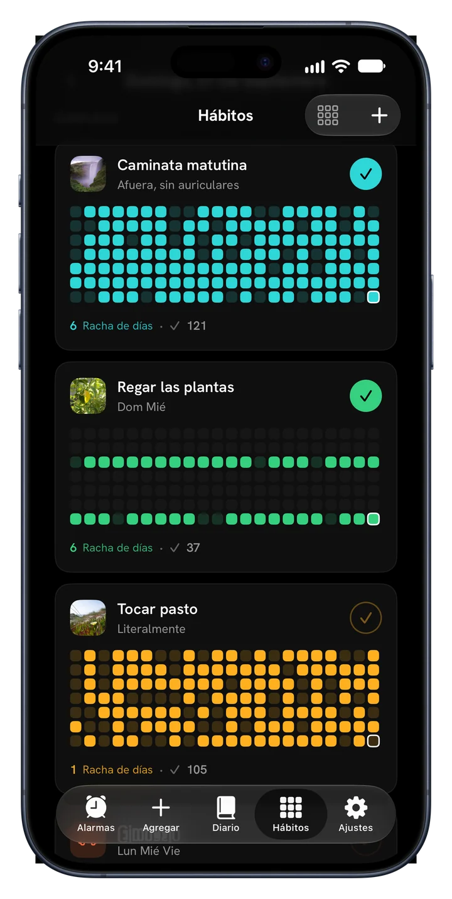
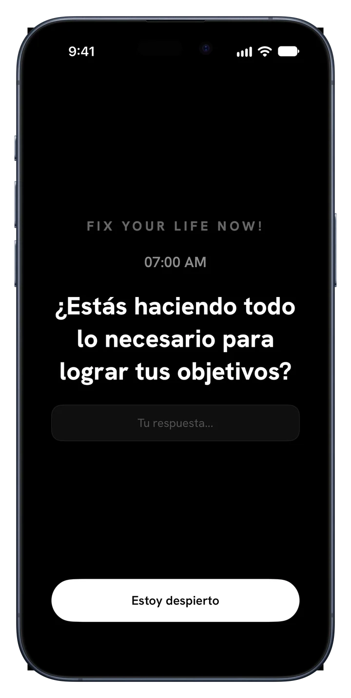
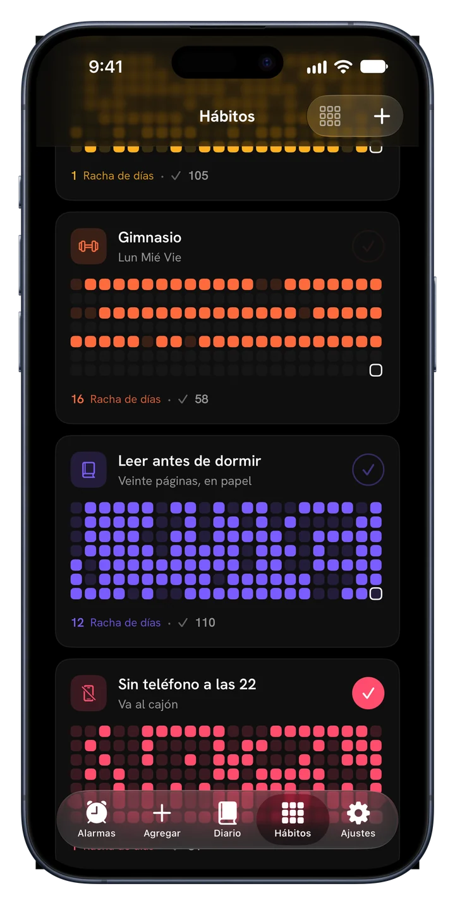
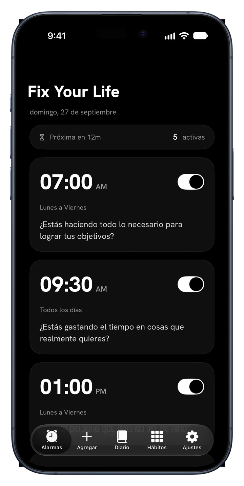
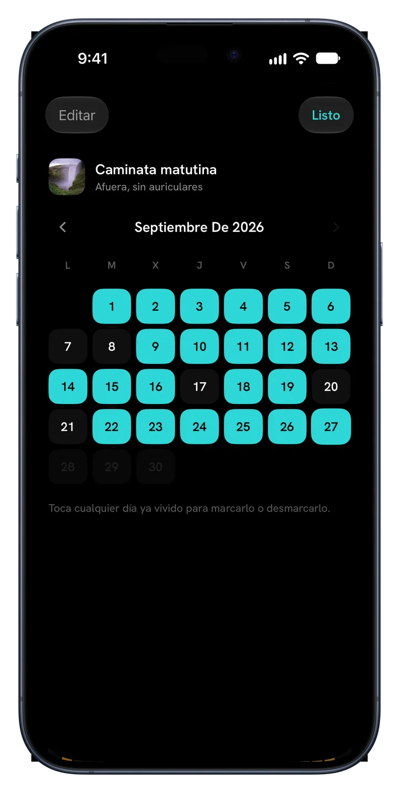
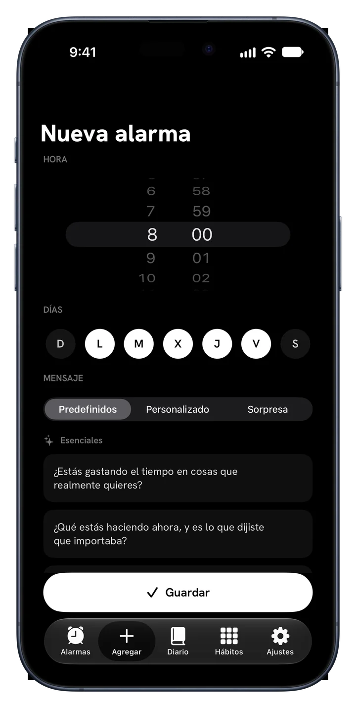
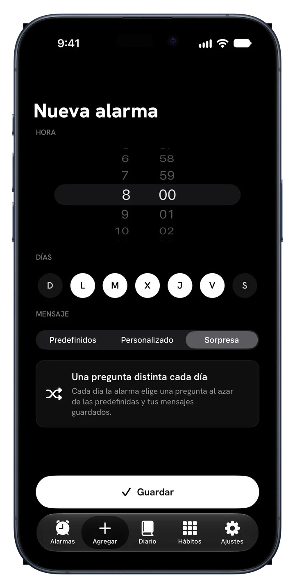
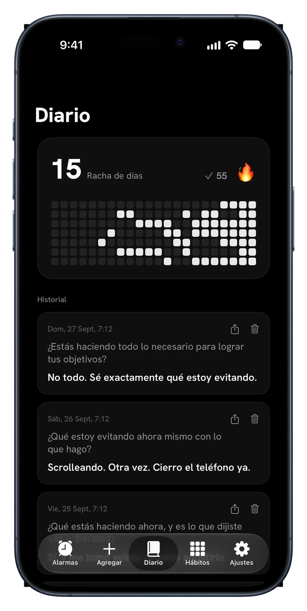
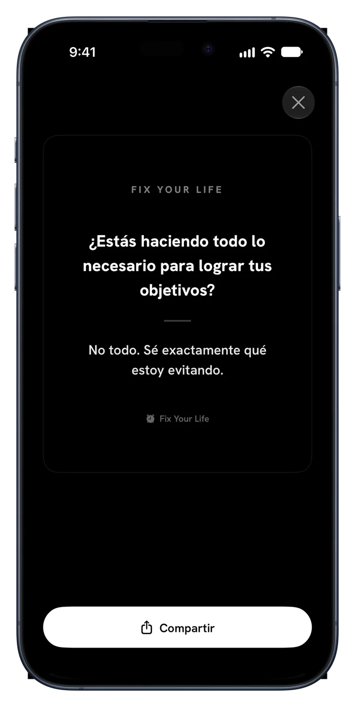

Caminata matutina
Todos los díasMedio año, un cuadrado por día
Fix Your Life te despierta con una pregunta que no puedes posponer y te ayuda a sostener lo que decidiste hacer: hábitos con tus propias fotos, rachas y tu año entero a todo color.
Descarga gratis · Una alarma y un hábito gratis, para siempre · Sin anuncios. Nunca.



Nuevo · Hábitos
Agrega lo que de verdad quieres sostener. Ponle una cara a cada cosa, márcala y mira crecer la racha en su propio color.


Medio año, un cuadrado por día
Medio año, un cuadrado por día
Medio año, un cuadrado por día
La app por dentro
Cada pantalla está hecha para una sola cosa: despertarte a tu propia vida.
Alarmas con sentido
Programa alarmas para cualquier hora y cualquier día. Cada una lleva una pregunta en lugar de un ruido que silencias y olvidas. Respóndela en una línea y el día empieza con honestidad.

34 preguntas · 6 paquetes
Esenciales, Ambición, Tiempo y muerte, Identidad, Espejo honesto y Estar vivo. No son afirmaciones. Son las preguntas que venías evitando. O escribe las tuyas.

Modo Sorpresa
La repetición se vuelve ruido de fondo. El modo Sorpresa elige una pregunta nueva para cada día de la semana, así la alarma nunca pierde filo.

Un diario que pregunta primero
Cada respuesta se guarda con su pregunta y su fecha. La racha, el mapa de calor y el historial están ahí, así la constancia se vuelve algo que puedes ver.

Widgets
Tu racha y la pregunta del día, para que lo primero que veas sea lo que venías evitando.

Comparte tus logros
Convierte cualquier respuesta en una tarjeta limpia y compártela donde quieras. Tus respuestas son la prueba de que apareciste, y algunas merecen la luz del día.
Cómo funciona
Tu plan está listo antes de que termine el primer minuto.
Mañanas, disciplina, salud, enfoque, tiempo de pantalla o sueño. Tu plan se arma a su alrededor.
Elige la hora. Suena todos los días con una pregunta que encaja con lo que elegiste.
Pequeño, diario y tuyo. Ponle una foto, elige un color, márcalo.
Cada día cumplido enciende un cuadrado. Si fallas uno, se nota. Sigue y el año se llena de color.
Precios
Una alarma y un hábito son gratis para siempre, con todas las funciones. Premium es para sostener un día entero de ellos.
$0 para siempre
Sin tarjeta ni prueba
$17.99 / año
3 días gratis · unos $0.35 por semana
$39.99 una vez
Un solo pago, sin suscripción
También disponible semanal a $4.99. Los precios están en dólares estadounidenses; el App Store muestra el precio de tu país. La prueba gratis es para nuevos suscriptores del plan anual.
Preguntas frecuentes
“Si alguien filmara las últimas dos horas de tu vida, ¿concluiría que quieres lo que dices querer?”
Una pregunta a la mañana. Un cuadrado por día. Así cambia de color un año.
Descárgalo en elApp StoreDescarga gratis · 45 idiomas · Sin anuncios. Nunca.